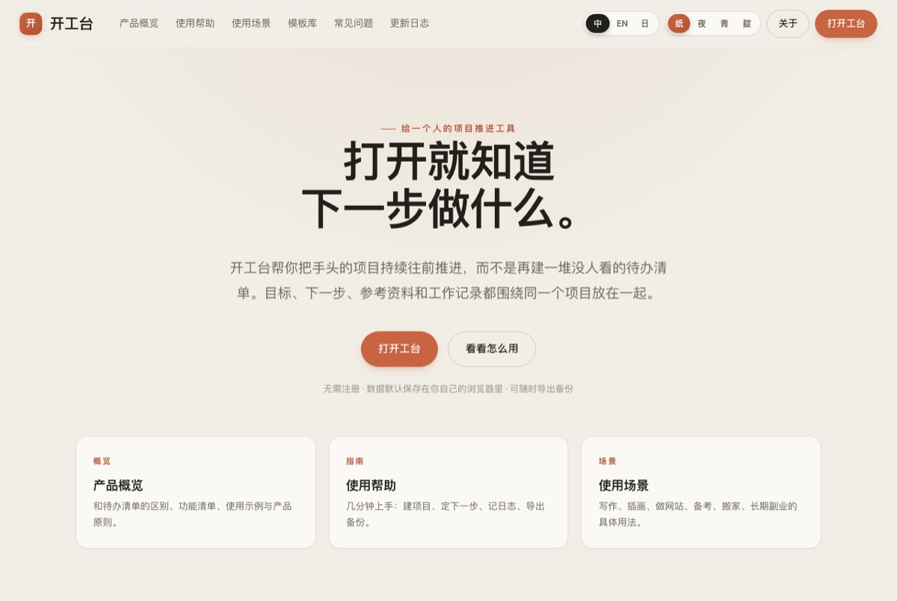
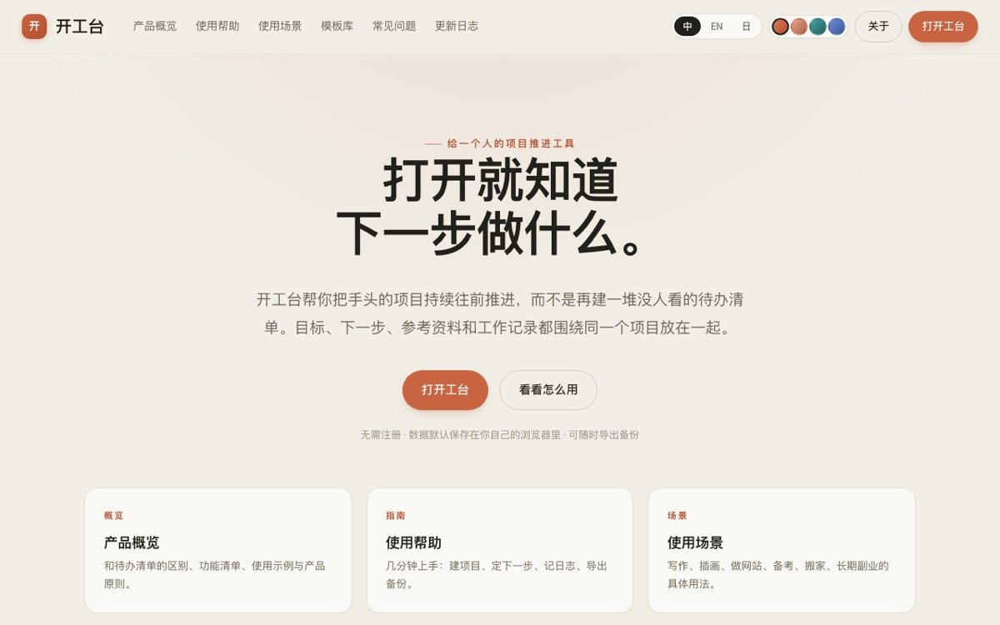
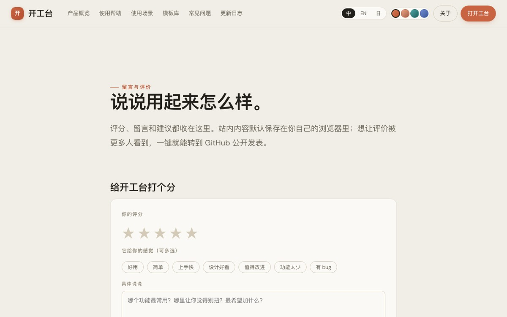
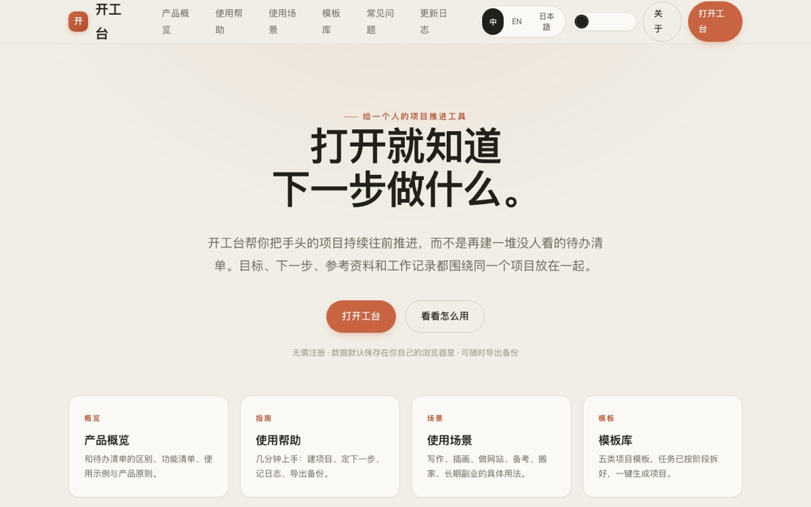
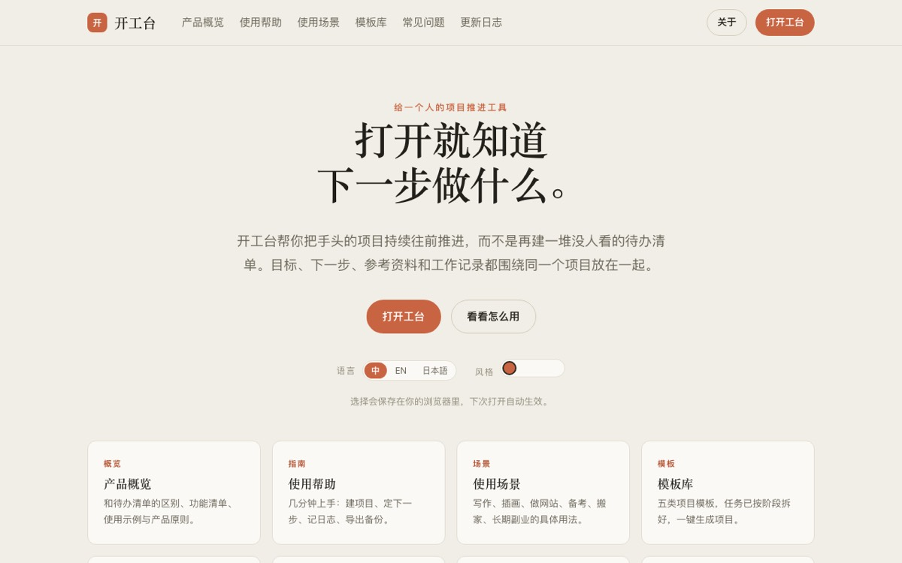
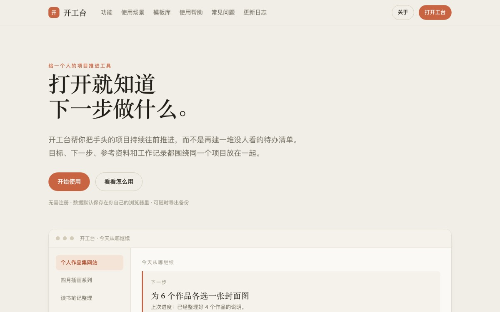
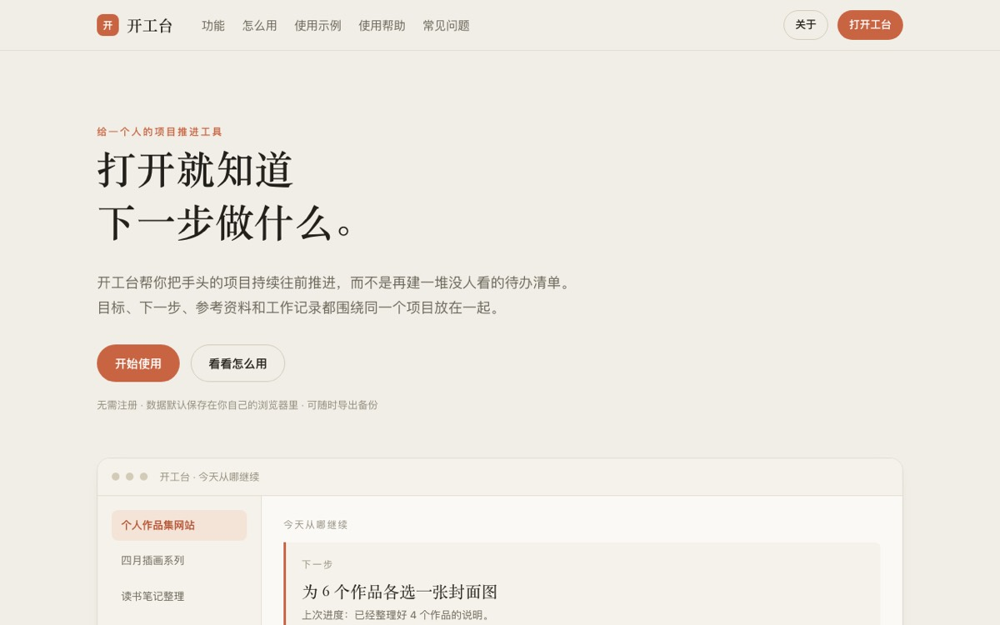

更新日志
版本记录
开工台会持续小幅迭代。所有更新都不改变使用方式：打开就能继续。下面的截图都是各版本的真实界面。
v2.0 · 2026 年 11 月 22 日
界面翻新与功能补全
- 界面全面翻新：药丸按钮加扫光效果、导航下划线动画、悬浮吸顶页头、卡片悬停浮起，视觉语言与《星陨哨站》官网同源。
- 语言与风格切换改为滑动条：可点击、拖动或用方向键切换，手机菜单内同样可用。
- 移动端适配重做：菜单面板收纳语言/风格/法律入口，表格改卡片式，触控目标加大。
- 工作台功能补全：项目搜索、任务排序、逾期提醒、专注计时器、近 7 天趋势、删除可撤销、快捷键（N / Esc）、一键复制项目摘要。
- 动画加量：滚动渐显、数字入场、进度条过渡、计时环、庆祝彩点、折叠展开动画。
- 免责声明独立入口：工作台首次使用提示、移动菜单法律行、关于页法律文件专区。

v1.4 · 2026 年 11 月 22 日
留言与体验升级
- 新增「留言与评价」页：站内评分、印象标签与留言，可一键转到 GitHub 公开发表。
- 工作台更有趣：按时段问候与今日统计、连续开工天数、任务进度条、完成庆祝动画。
- 模板库扩充到 8 个（新增播客上线、学习新技能、房间改造）。
- 修复：切换语言后页面宽度跳动、主题圆点不可见、工作台无法返回首页、页头文字错位换行。
- 免责声明补充开源字体许可信息；修正此前错误的版本日期。


v1.3 · 2026 年 11 月 22 日
字体与界面翻新
- 字体全面更换为精选的开源字体组合（Fraunces / DM Sans / Newsreader，SIL OFL 开源许可），中文统一黑体/苹方回退。
- 语言与风格切换器移至顶部菜单栏右侧，全站位置统一。
- 界面大幅美化：导航、按钮、卡片、阴影、间距与排版比例全部重调。
- 新增动画：首屏入场、滚动渐显、卡片悬停浮动、主题切换平滑过渡、问答折叠展开动画。

v1.2 · 2026 年 11 月 22 日
分区与多语言
- 首页改为分区启动台：不再一屏滚到底，栏目入口一目了然。
- 新增多种界面风格：纸感米色、暗夜、青灰、靛蓝，全站可切换并记住选择。
- 新增多语言：简体中文 / English / 日本語，界面与主要页面可切换（法律正文以中文为准）。
- 新增「产品概览」页，收录与待办清单的区别、使用示例、功能清单与产品原则。

v1.1 · 2026 年 11 月 21 日
排版与内容扩充
- 全新字体排版：标题与正文改用更适合长时间阅读的字体组合，行距与字距重新调整。
- 新增「使用场景」与「模板库」：五类项目模板可一键生成项目，任务已按阶段预填。
- 修复：移动端导航无法打开；深色区块中引用文字不可见；「修改下一步」按钮在其他标签页无反应。
- 修复：导入损坏的备份文件可能导致工作台崩溃，现在会自动清洗数据后再导入。
- 安全：资料链接只保留 http/https，过滤其他伪协议。

v1.0 · 2026 年 11 月 21 日
第一个版本
- 项目：目标、下一步、阶段任务、参考资料、工作日志、成果与复盘。
- 首页「今天从哪继续」：汇总所有进行中项目的下一步与最近进度。
- 收集箱：随手记录，之后归入项目或转成任务。
- 数据导出与导入（JSON 备份），数据默认保存在浏览器本地。
- 帮助、常见问题、关于与法律页面（隐私政策 / 服务条款 / 免责声明）。

更新只涉及网页本身，你的数据保存在浏览器里，不会被更新覆盖。重大变化会在这一页显著说明。